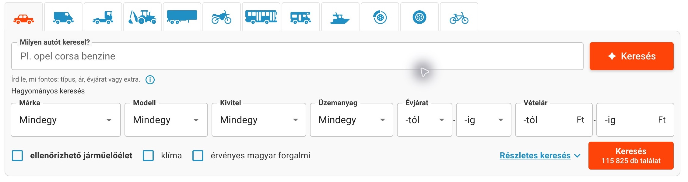
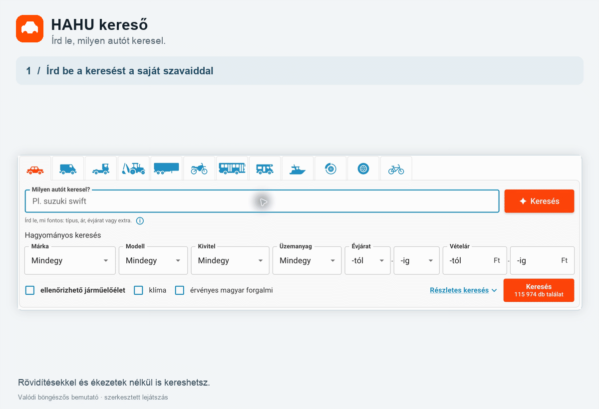

HAHU kereső — természetes nyelvű autókeresés
Jogi nyilatkozat: Ez egy független, nem hivatalos bővítmény. Sem a bővítmény, sem a fejlesztője nem áll kapcsolatban a Használtautó.hu-val, annak tulajdonosával vagy üzemeltetőjével.


Írd le, milyen autót keresel. A bővítmény beállítja a szűrőket.
A HAHU kereső természetes nyelvű keresőmezőt ad a Használtautó.hu oldalához. A leírásodból az oldal saját keresési feltételeit állítja be, majd megnyitja a találatokat.
Példák
uj vitaragolf 14tol 5migúj elektromos max 10m 150k alatt
Egy mondatban megadhatod a márkát, a modellt, az árat, az évjáratot, a futásteljesítményt vagy a felszereltséget. Ékezetek nélkül is írhatsz. Ha egy feltételt nem sikerül beállítani, arról jelzés jelenik meg a találati oldalon. A bővítmény használatához asztali Chrome szükséges.
Telepítés GitHub Release-ből
A használathoz Chrome és a fejlesztőtől kapott API-kulcs kell. Backendtelepítésre és buildelésre nincs szükség. A kulcsot külön, biztonságos csatornán kérd a fejlesztőtől.
- Ajánlott: a legfrissebb kiadás Assets részéből töltsd le a
hahu-kereso.zipfájlt. Vagy a repó GitHub-oldalán válaszd a Code → Download ZIP lehetőséget az aktuális verzióhoz. - Csomagold ki egy állandó mappába. Chrome-ban nyisd meg a
chrome://extensionsoldalt, kapcsold be a Fejlesztői módot, majd válaszd a Kicsomagolt bővítmény betöltése lehetőséget. A kicsomagolt kiadási mappát válaszd ki. - Nyisd meg a Chrome bővítménymenüjéből a HAHU kereső panelt. Illeszd be az API-kulcsot, majd válaszd az Ellenőrzés és mentés gombot. A panelen a hátralévő keresések száma is látható.
- Nyisd meg vagy töltsd újra a Használtautó keresőoldalát, írd le, milyen autót keresel, majd kattints az új mező melletti Keresés gombra.
A kicsomagolt mappát tartsd meg. A kézzel telepített bővítmény nem frissül automatikusan. Új verzióhoz töltsd le és csomagold ki az új ZIP-et, távolítsd el a régi példányt, és töltsd be az újat; a kulcsot ezután újra meg kell adnod.
A keresés szövegét külső AI-szolgáltató dolgozza fel. Az AI tévedhet, ezért ellenőrizd a beállított szűrőket és a találatokat. Ha valamelyik feltételt nem sikerült beállítani, a találati oldalon erről is jelzés jelenik meg.
Adatvédelem és API-kulcsok
- Az API-kulcs a szolgáltatás használatára jogosít, és ehhez kapcsolódik a keresési keret. A bővítmény a böngészőprofilban tárolja, ezért kezeld bizalmasan. Ha eltávolítod a bővítményből, csak erről az eszközről törlődik; a szerveroldali visszavonást a fejlesztőtől kérheted.
- A keresés szövege a háttérrendszerhez és az OpenAI-hoz kerül. Az üzemeltető a kereséseket és eredményeket hibakereséshez a privát Phoenix naplóban tárolja; ne írj be személyes vagy bizalmas adatot. A hozzáférésről és megőrzésről az üzemeltetőtől kérhetsz tájékoztatást. A bővítmény API-kulcsát a rendszer nem továbbítja az OpenAI-nak. Használat előtt olvasd el az OpenAI API-ra vonatkozó feltételeket.
Licenc
A repó saját forráskódjára és eredeti dokumentációs anyagaira az MIT licenc vonatkozik: bárki felhasználhatja, módosíthatja és terjesztheti a licenc feltételeinek betartásával. A Használtautó.hu felületét ábrázoló képernyőképek és a weboldalon megjelenő védjegyek a saját jogosultjaikhoz tartoznak; ezekre az MIT licenc nem ad további felhasználási jogot.